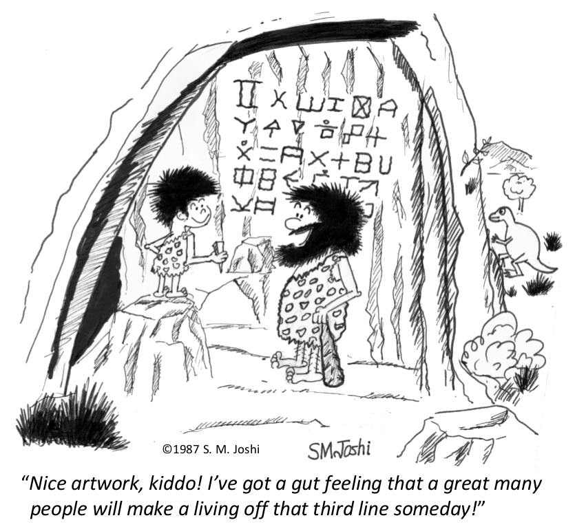

|
Teoria dei Sistemi 2019/20 — LM Ingegneria Meccatronica • Univ. Padova
Informazioni generali
|
 |
Descrizione:
Il corso si propone di fornire strumenti e tecniche evolute per l’analisi e controllo di sistemi dinamici.
Ci concentreremo sull'approccio in spazio di stato e considereremo, per la gran parte del corso, sistemi lineari e tempo invarianti a tempo continuo e discreto.
Analizzeremo prima le proprietà fondamentali di questi sistemi (soluzioni, stabilità, raggiungibilità, osservabilità, etc.) per poi studiare tecniche di controllo in retroazione.
Informazioni e programma indicativo
Pagina offerta formativa UniPD
Pagina moodle DTG
|
[Image credits: http://controlcartoons.com]
News:
• 23/10/19: Le soluzioni (= risultati finali) degli esercizi suggeriti sono ora disponibili.
• 22/10/19: Il quiz Kahoot relativo alla prima parte del corso (modelli di stato e analisi modale) si può trovare qui.
Ricevimento:
Dopo lezione o tramite appuntamento e-mail (usare sigla [IMC-TdS-1920] all'inizio dell'oggetto e-mail!)
Orario lezioni:
Lunedì 16:00-18:00, Aula VM3 (l'inizio della lezione è stato anticipato alle 15:45)
Martedì 11:00-13:00, Aula B2
Testo di riferimento:
Testi per consultazione:
E. Fornasini. “Appunti di teoria dei sistemi”. Ed. Libreria Progetto Padova, 2013.
E. Fornasini, G. Marchesini. “Esercizi di teoria dei sistemi”. Ed. Libreria Progetto Padova, 1997.
Calendario esami:
I appello: 29/01/20 9:00–11:30, Aula B1
II appello: 14/02/20 14:00–16:30, Aula B1
III appello: 03/07/20 9:00–11:30, Aula B1
IV appello: 03/09/20 9:00–11:30, Aula B1
Esercizi in preparazione all'esame:
Esercizi e temi d'esame risolti degli anni scorsi sono disponibili nella pagina web del Prof. Zampieri.
Lezioni
| lezione | contenuti | slides | slides annotate | testo | esercizi suggeriti | extra |
| 01/10/19 | Introduzione al corso,
concetto di sistema dinamico | Lezione 1 | – | – | – | Video introduttivi sulla
teoria dei sistemi e del controllo:
why learn control theory
automation
controlling self driving cars |
| 07/10/19 | Classificazione di sistemi e
rappresentazione di stato | Lezione 2
Lezione 2 (4x1)
Lezione 2 (2x1+N) | Lezione 2 | § 1.1, 1.2 | Es. Lezione 2 | Video: Matlab tech talk
Modelli di stato in Matlab |
08/10/19
— —
14/10/19 | Esponenziale di matrice e
richiami di algebra lineare | Lezione 3 & 4
Lezione 3 & 4 (4x1)
Lezione 3 & 4 (2x1+N) | Lezione 3 & 4 | § 1.3, 1.4 | Es. Lezione 3 & 4 | Canale YouTube corso
Algebra Lineare e Geometria
Prof. Bottacin |
| 15/10/19 | Forma di Jordan e
polinomio minimo | Lezione 5
Lezione 5 (4x1)
Lezione 5 (2x1+N) | Lezione 5 | § 1.5, 1.6
§ 3.3 | Es. Lezione 5 | Vedere pagina Moodle
per approfondimenti
sulla forma di Jordan |
| 21/10/19 | Analisi modale,
evoluzione libera e forzata
a tempo continuo | Lezione 6
Lezione 6 (4x1)
Lezione 6 (2x1+N) | Lezione 6 | § 1.7, 1.8
§ 3.1 | Es. Lezione 6 | Tabella riassuntiva su
Trasformata Laplace |
| 22/10/19 | Analisi modale,
evoluzione libera e forzata
a tempo discreto | Lezione 7
Lezione 7 (4x1)
Lezione 7 (2x1+N) | Lezione 7 | § 3.5, 3.6 | Es. Lezione 7 | Tabella riassuntiva su
Trasformata Zeta |
| 28/10/19 | Esercizi di ricapitolazione | Lezione 8
Lezione 8 (4x1)
Lezione 8 (2x1+N) | – | – | – | Quiz Kahoot |
| 29/10/19 | Equilibri, stabilità,
linearizzazione | Lezione 9
Lezione 9 (4x1)
Lezione 9 (2x1+N) | – | § 2.1, 2.2, 2.5
§ 3.2 | Es. Lezione 9 | Ritratto di fase di
sistemi lineari 2D |
| 04/11/19 | Stabilità e funzioni Lyapunov | – | – | – | – | – |
| 05/11/19 | Metodo di Lyapunov
per sistemi lineari | – | – | – | – | – |
| 11/11/19 | Stabilità del linearizzato e
teorema di Krasowskii | – | – | – | – | – |
| 12/11/19 | Esercizi di ricapitolazione | – | – | – | – | – |
| 18/11/19 | Raggiungibilità e controllabilità
a tempo discreto | – | – | – | – | – |
| 19/11/19 | Ingresso ottimo, forma canonica
e criterio PBH | – | – | – | – | – |
| 25/11/19 | Raggiungibilità e controllabilità
a tempo continuo | – | – | – | – | – |
| 26/11/19 | Retroazione dallo stato e
allocazione autovalori | – | – | – | – | – |
| 02/12/19 | Stabilizzabilità e lemma di Heymann | – | – | – | – | – |
| 03/12/19 | Esercizi di ricapitolazione | – | – | – | – | – |
| 09/12/19 | Osservabilità e ricostruibilità
a tempo discreto | – | – | – | – | – |
| 16/12/19 | Osservabilità e ricostruibilità
a tempo continuo | – | – | – | – | – |
| 17/12/19 | Stimatori di stato | – | – | – | – | – |
| 07/01/20 | Sintesi del regolatore | – | – | – | – | – |
| 13/01/20 | Esercizi di ricapitolazione | – | – | – | – | –
|
|